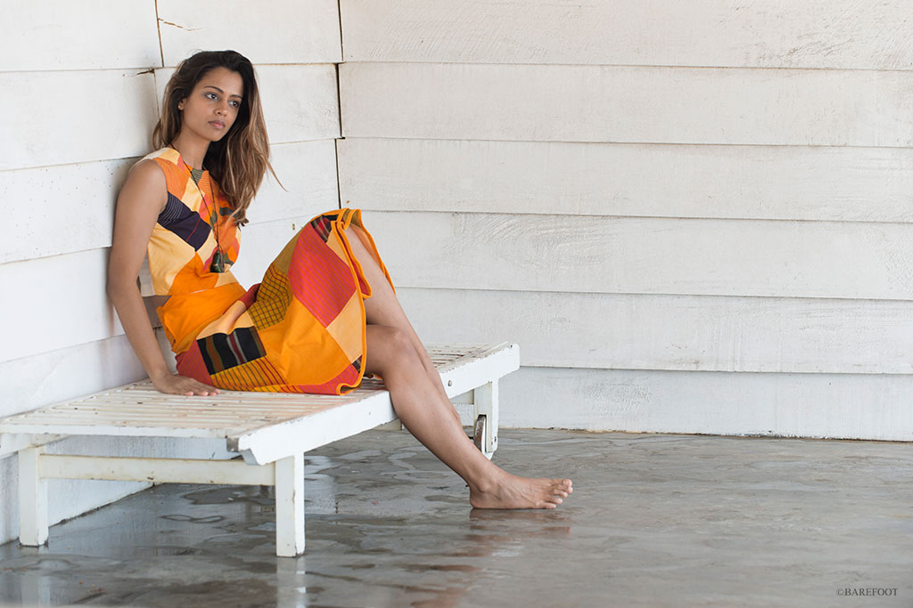

Our collection of contemporary clothing comprises of on-loom finished, draped and stitched garments constructed from simple geometric sections of cloth. CTS started weaving sarongs in the late 1970’s and revived a love for this wonderful timeless unisex garment. We now weave sarongs with designs inspired by the birds and butterflies of Sri Lanka as well as the fish of the Indian Ocean. Sarongs (aka lungis, pareos, kikoy, beach wraps) are now also made with natural dyes and we carry an extensive range at our shops in Colombo and Galle Fort, Sri Lanka. Do look out for our new range of intricately woven sarongs called ‘Check your stripe’ inspired by the more traditional rectangular intricate designs.
In creating our clothes for men, women and children, we have attempted to revive traditional methods of design and construction using materials sparingly and maximizing the sewing skills we value highly. We also carry the M-Fact range designed by Marisa Gnanaraj. No two garments are ever alike, do look out for this rather exclusive range for men and women. This collection is only available at the main CTS shop in Colombo.
“The next best thing to being naked is wearing a CTS sarong” Also enjoy our collection of handloom sari’s in fine mercerized cottons and on occasion a mix of handwoven silk & cotton too.
Hand-woven Cloth
We hand weave both coarse and fine warp and weft textures and our handloom fabrics are characterized by the vivid use of colour in geometric proportion.
100% Coton made
Most of our handloom fabric is made from 100% cotton. We also weave a small amount of silk and cotton together for finer cloth for garments, sarongs and beach wraps.
Beautiful Design
CTS design is inspired by the land and seascapes, marine life, flora and fauna of Sri Lanka and we translate these into abstract geometry to produce beautiful and useful handwoven cloth..
Competitive Prices
Bunnings' price guarantee applies to any lower price on an item that is currently stocked and available from an online store, or in a physical store in Australia.